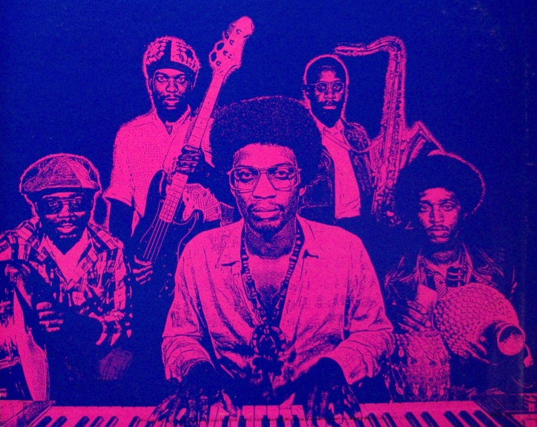

Herbie Hancock
Un icono innovador del jazz
¿Quien es?
El pianista de jazz, Herbie Hancock, nació el 12 de abril de 1940 en Chicago. Cursó sus estudios en el Grinnel College y en la Universidad de Roosevelt.
Con siete años empezó a tocar el piano y a los once ofreció un concierto de Wolfgang Amadeus Mozar, con la Orquesta Sinfónica de Chicago para jóvenes interpretes. Su interes por el Jazz se despertó al escuchar discos de Oscar Peterson y George Shearing.
Trayecto
En 1962 firmó su primer contrato grabando para Blue Note con Donald Byrd. Los productores del sello al oírlo tocar le ofrecieron grabar a su nombre y el pianista les respondió con el disco «Takin’ Off» que incluía su primera gran composición titulada «Watermelon Man».
Eric Dolphy Y Miles Davis
Durante una temporada y de forma independiente estuvo con el quinteto de Eric Dolphy (1962-1963) y en 1963 se unió al quinteto de Miles Davis. Estuvo con el trompetista hasta 1968 y se convirtió sin lugar a dudas en el soporte musical principal de Davis. Paralelamente a la formación con Davis, Herbie Hancock grabó una serie de magníficos álbumes para Blue Note, siendo el mas destacado de ellos el titulado «Maiden Voyage», toda una obra maestra del piano de jazz.
Generos y recursos
Si hay algo que destaca a Herbie hancock, es su variedad de sonidos. Hancock, mezcló estilos y recursos como el pop, el hard-rock, la música disco sintetizada, técnicas de doblaje musical y edición de mezclas. Tuvo la idea de reunir a todos los músicos que habían estado con Miles Davis y formó una banda llamada: «VSOP» con notable éxito de critica y publico. Durante los años ochenta descubrió la música scratch, basada en un efecto rítmico original del rap, y junto a su nuevo grupo, la Rockit Band, exploró los ritmos de la música urbana contemporánea.
Discografía
Estamos ante una Discografía con una variedad inmensa que fue construyendo a lo largo de su carrera, la cual hoy sigue vigente.
Estamos hablando de mas de 100 discos, incluyendo de estudio, en vivo, recopilatorios y bandas sonoras
Aquí una lista de los más destacados
Head Hunters es el duodécimo álbum de estudio del músico estadounidense de jazz Herbie Hancock. Fue lanzado el 26 de octubre de 1973
Man-Child es el decimoquinto álbum de estudio del pianista de jazz Herbie Hancock. El disco fue lanzado el 22 de agosto de 1975 por Columbia Records.
Fue producido por "Material" y Hancock y publicado por Columbia en agosto de 1983.
Empyrean Isles es el cuarto álbum de estudio del pianista de jazz estadounidense Herbie Hancock, lanzado por Blue Note Records en noviembre de 1964.
Secrets es un álbum de fusión jazz-funk del teclista Herbie Hancock. También es el decimoséptimo álbum de Hancock en general. Fue lanzado el 15 de agosto de 1976